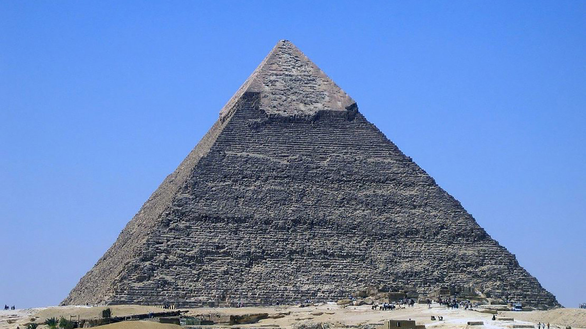
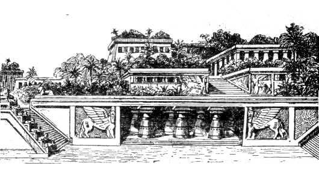
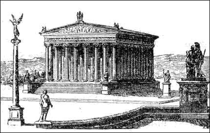
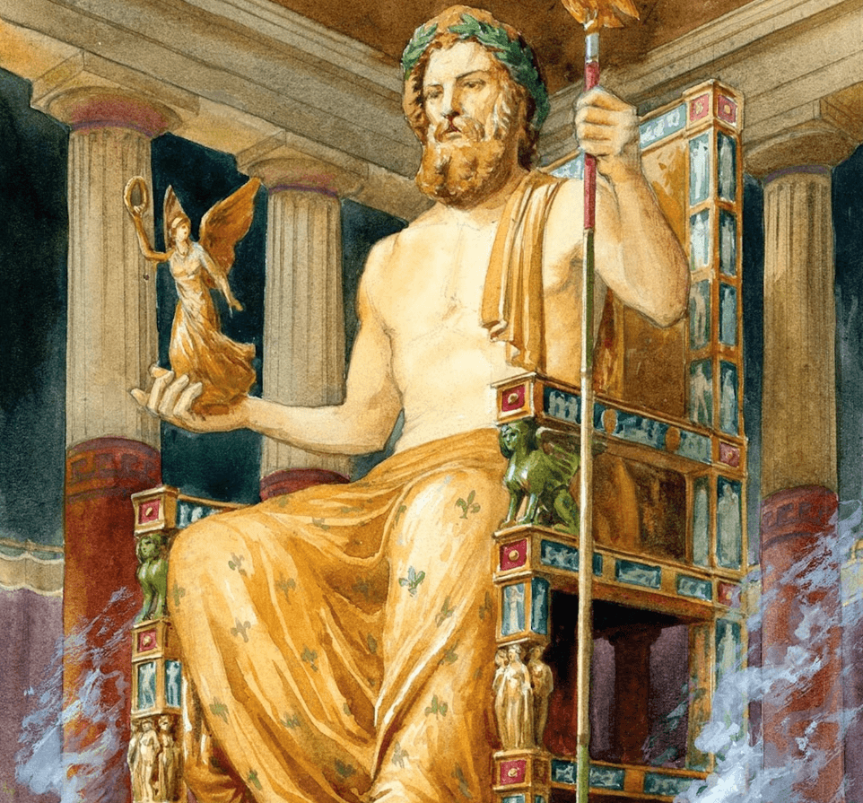
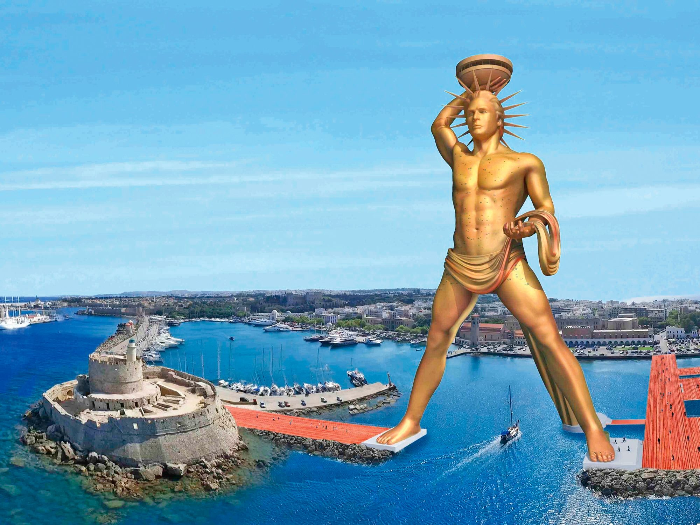
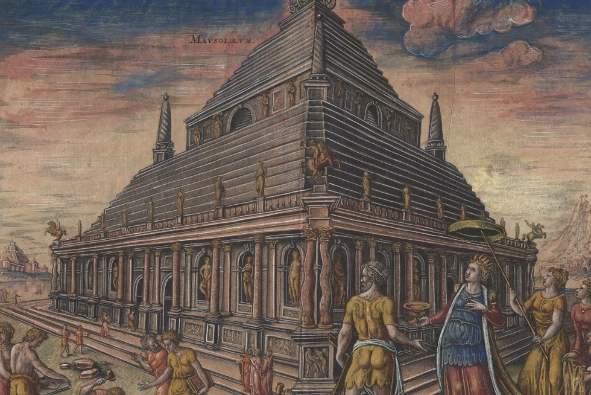
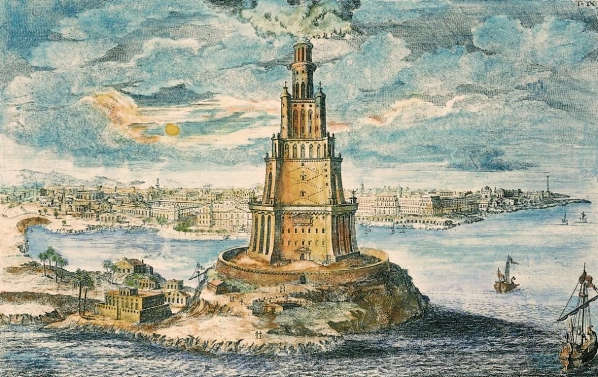

Informacje o każdym z 7 cudów
Piramida Cheopsa
Piramida Cheopsa, znana także jako Wielka Piramida w Gizie, jest jednym z najbardziej znanych zabytków starożytnego Egiptu i jedynym z siedmiu cudów świata starożytnego, który przetrwał do dziś. Znajduje się na płaskowyżu w Gizie, niedaleko Kairu, i została zbudowana około 2560 roku p.n.e. jako grobowiec faraona Cheopsa (Chufu) z IV dynastii. Jej pierwotna wysokość wynosiła około 146,6 metra, jednak obecnie mierzy około 138 metrów z powodu erozji i utraty zewnętrznej warstwy wapiennej. Podstawa piramidy to kwadrat o boku około 230 metrów, a cała konstrukcja składa się z około 2,3 miliona bloków kamiennych, z których każdy waży od 2 do 15 ton. Łączna masa piramidy szacowana jest na około 5,9 miliona ton. Piramida została zbudowana jako monumentalny grobowiec, mający zapewnić faraonowi nieśmiertelność i przejście do życia pozagrobowego. Jej konstrukcja była wynikiem zaawansowanych umiejętności inżynieryjnych starożytnych Egipcjan. Wnętrze piramidy zawiera trzy główne komory: Komorę Króla, Komorę Królowej i tzw. Komorę Podziemną. Istnieją także wąskie szyby, które mogły pełnić funkcje symboliczne lub wentylacyjne.

Wiszące Ogrody Semiramidy
Wiszące Ogrody Semiramidy to jeden z siedmiu cudów świata starożytnego, który według legend znajdował się w Babilonie. Miały zostać zbudowane w VI wieku p.n.e. przez króla Nabuchodonozora II dla jego żony Amytis, pochodzącej z Medii. Tęskniąc za zielonymi, górzystymi krajobrazami swojej ojczyzny, Amytis miała otrzymać od króla wspaniałe tarasowe ogrody, pełne bujnej roślinności, pnączy i drzew owocowych. Ogrody wznosiły się na kilku poziomach i były wspierane przez kamienne tarasy i kolumny. Zaawansowany system nawadniania, oparty najprawdopodobniej na śrubach Archimedesa lub łańcuchach czerpakowych, umożliwiał dostarczanie wody nawet na najwyższe tarasy, co było osiągnięciem inżynieryjnym tamtych czasów. Roślinność utrzymywała się w pełnym rozkwicie pomimo gorącego klimatu Mezopotamii. Choć opisy ogrodów pojawiają się w dziełach starożytnych historyków, takich jak Diodor Sycylijski i Strabon, do dziś nie odnaleziono żadnych dowodów archeologicznych potwierdzających ich istnienie. Niektórzy badacze sugerują, że ogrody mogły znajdować się nie w Babilonie, lecz w Niniwie, lub że są wytworem legendy. Niezależnie od tego, Wiszące Ogrody Semiramidy pozostają symbolem luksusu, piękna i zaawansowanej myśli inżynieryjnej starożytności. Ciekawostki o wiszacych ogrodach(otworzy sie w nowej karcie)

Świątynia Artemidy w Efezie
Świątynia Artemidy w Efezie, znana również jako Artemizjon, była jednym z siedmiu cudów świata starożytnego. Znajdowała się w mieście Efez, na terenie dzisiejszej Turcji, i została poświęcona bogini Artemidzie, opiekunce łowów, przyrody i płodności. Była jednym z najbardziej imponujących osiągnięć architektury antycznej, zarówno pod względem rozmiarów, jak i zdobień. Pierwsza wersja świątyni powstała około VIII wieku p.n.e., jednak najbardziej znana, monumentalna budowla została wzniesiona w VI wieku p.n.e. z inicjatywy króla Lidii, Krezusa. Świątynia była ogromna – miała około 115 metrów długości i 55 metrów szerokości, a jej dach wspierało 127 marmurowych kolumn o wysokości ponad 18 metrów. Była bogato zdobiona rzeźbami i reliefami, a w jej wnętrzu znajdował się posąg Artemidy wykonany z drewna, złota i srebra. W 356 roku p.n.e. świątynia została zniszczona przez Herostratesa, który podpalił ją, chcąc w ten sposób zapisać swoje imię w historii. Odbudowano ją w jeszcze wspanialszym stylu, jednak ponownie została zniszczona przez najazdy Gotów w III wieku n.e., a ostatecznie popadła w ruinę wraz z upadkiem starożytnych wierzeń. Dziś po świątyni pozostały jedynie fragmenty fundamentów i pojedyncze kolumny, ale jej legenda i opisane przez starożytnych historyków piękno pozostają symbolem potęgi i wspaniałości sztuki starożytnej Grecji.

Posąg Zeusa w Olimpii
Posąg Zeusa w Olimpii był jednym z siedmiu cudów świata starożytnego, stworzonym około 435 roku p.n.e. przez słynnego rzeźbiarza Fidiasza. Znajdował się w świątyni Zeusa w Olimpii, miejscu organizacji starożytnych igrzysk olimpijskich, i był poświęcony najważniejszemu z bogów greckiego panteonu – Zeusowi. Monumentalny posąg, wykonany w technice chryzelefantyny (połączenie złota i kości słoniowej), przedstawiał Zeusa siedzącego na tronie, trzymającego w prawej dłoni posążek bogini Nike – symbol zwycięstwa, a w lewej berło zwieńczone orłem. Sam Zeus miał około 12 metrów wysokości, co czyniło go niezwykle majestatycznym i dominującym w świątyni. Tron, na którym zasiadał, był bogato zdobiony złotem, hebanem i drogocennymi kamieniami, a całość otaczały misterne reliefy i płaskorzeźby. Posąg wzbudzał podziw zarówno przez swoje rozmiary, jak i niezwykłe piękno oraz kunszt wykonania. Dzieło Fidiasza miało symbolizować potęgę i boskość Zeusa, podkreślając jednocześnie znaczenie Olimpii jako duchowego i sportowego centrum starożytnej Grecji. Niestety, posąg zaginął w późnym antyku, prawdopodobnie uległ zniszczeniu podczas pożaru lub najazdów barbarzyńskich w IV lub V wieku n.e. Do dziś nie zachował się żaden jego oryginalny fragment, a jedynie opisy historyków oraz wizerunki na starożytnych monetach i płaskorzeźbach przypominają o tym niezwykłym dziele sztuki.

Kolos Rodyjski
Kolos Rodyjski był jednym z siedmiu cudów świata starożytnego, monumentalnym posągiem boga słońca Heliosa, wzniesionym na greckiej wyspie Rodos. Został zbudowany między 292 a 280 rokiem p.n.e. przez rzeźbiarza Charesa z Lindos, aby upamiętnić zwycięstwo mieszkańców Rodos nad armią Demetriusza Poliorketesa, który bezskutecznie oblegał wyspę. Posąg miał około 32-33 metry wysokości, co czyniło go jedną z najwyższych rzeźb starożytnego świata. Był wykonany z brązu i prawdopodobnie wsparty na wewnętrznej konstrukcji żelaznej, a jego zewnętrzna powłoka lśniła w słońcu. Kolos miał przedstawiać Heliosa stojącego w dumnej pozie, choć popularny mit, jakoby rozkładał nogi nad wejściem do portu, jest raczej wynikiem późniejszych wyobrażeń niż rzeczywistości. Kolos Rodyjski istniał zaledwie przez około 54 lata. W 226 roku p.n.e. został zniszczony przez silne trzęsienie ziemi, które powaliło posąg. Jego szczątki pozostawały na miejscu przez wieki, budząc podziw ze względu na ogrom rzeźby, aż w VII wieku n.e. Arabowie, którzy zdobyli wyspę, mieli sprzedać metal ze zniszczonego posągu jako łup wojenny. Pomimo krótkiej historii, Kolos Rodyjski na stałe wpisał się w legendy starożytności jako symbol potęgi i triumfu. Dziś inspiruje liczne dzieła sztuki i popkultury, a jego majestatyczna forma pozostaje ikoną starożytnej inżynierii i artystycznego kunsztu.

Mauzoleum w Halikarnasie
Mauzoleum w Halikarnasie było jednym z siedmiu cudów świata starożytnego, monumentalnym grobowcem wzniesionym w IV wieku p.n.e. w mieście Halikarnas (dzisiejsze Bodrum w Turcji). Zostało zbudowane na polecenie Artemizji II, żony i siostry króla Mauzolosa, po jego śmierci w 353 roku p.n.e. jako hołd dla zmarłego władcy. Budowla zachwycała zarówno swoim rozmiarem, jak i artystycznym bogactwem. Miała około 45 metrów wysokości i składała się z kilku poziomów. Podstawę stanowił prostokątny cokół, na którym wznosiła się kolumnada w stylu jońskim, a całość wieńczył piramidalny dach z rzeźbiarską grupą przedstawiającą Mauzolosa i Artemizję w rydwanie zaprzężonym w cztery konie. Grobowiec był bogato zdobiony płaskorzeźbami i posągami, stworzonymi przez najsłynniejszych artystów tamtych czasów, m.in. Skopasa, Bryaksisa, Leocharesa i Timoteosa. Mauzoleum było nie tylko miejscem pochówku, ale także arcydziełem architektury i rzeźby, łączącym elementy greckie, egipskie i mezopotamskie. Przetrwało ponad tysiąc lat, aż do zniszczenia przez trzęsienia ziemi między XII a XV wiekiem. Część jego fragmentów została później użyta do budowy Zamku św. Piotra przez joannitów. Choć sam grobowiec nie przetrwał do dziś, jego nazwa – mauzoleum – na stałe weszła do języka jako określenie monumentalnych grobowców, a pozostałości rzeźb i fragmenty budowli można podziwiać w British Museum w Londynie.

Latarnia morska na Faros
Latarnia morska na Faros, znana również jako Latarnia Aleksandryjska, była jednym z siedmiu cudów świata starożytnego, wzniesionym na wyspie Faros u wybrzeży Aleksandrii w Egipcie. Została zbudowana w III wieku p.n.e., za panowania Ptolemeusza II Filadelfosa, aby ułatwić żeglarzom nawigację i wskazywać drogę do portu Aleksandrii, jednego z najważniejszych centrów handlowych starożytnego świata. Latarnia miała około 100-140 metrów wysokości, co czyniło ją jedną z najwyższych budowli swoich czasów. Składała się z trzech poziomów: kwadratowej podstawy, ośmiokątnej środkowej części i cylindrycznej wieży na szczycie. Na samym wierzchołku znajdowało się palenisko, w którym płonął ogień, a jego światło było wzmacniane przez system luster z brązu, umożliwiający widoczność na wiele kilometrów. Oprócz funkcji praktycznej, latarnia była także dziełem sztuki architektonicznej i symbolem potęgi Aleksandrii. Jej konstrukcja była tak solidna, że przetrwała przez wiele wieków, choć z czasem została poważnie uszkodzona przez trzęsienia ziemi, głównie w XIV wieku n.e. Ostatecznie jej pozostałości zniknęły, a kamienie wykorzystano m.in. do budowy fortu Kajtbaj, który dziś stoi w miejscu dawnej latarni. Latarnia na Faros pozostaje symbolem starożytnej inżynierii i inspiracją dla nowoczesnych latarni morskich, a jej legendarny blask do dziś rozbudza wyobraźnię jako jedno z największych osiągnięć technicznych starożytnego świata.
